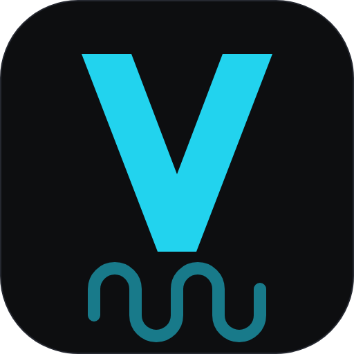
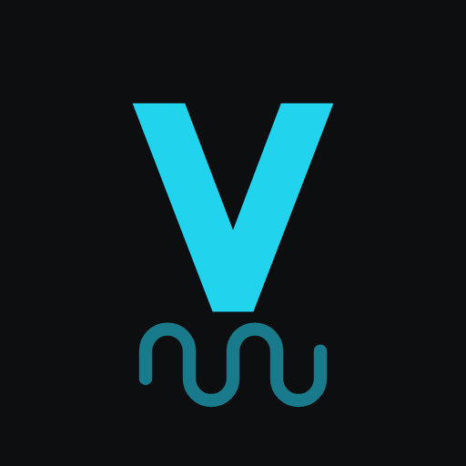

Varmeplan-ikon — forhåndsvisning
Kilde: icons/varmeplan.svg (V + kabelslynge), icons/varmeplan-maskable.svg (80 % innenfor trygg sone)
og icons/favicon.svg (bare V, for 16/32 px). PNG-ene er rastrert én gang fra SVG-ene — ingen byggesteg.
Alle størrelser på lys bakgrunn

512 (vist 128)192 (vist 96)
180 (vist 90)

maskable 512, rund maske48
32 med slynge
32 favicon (bare V)
16 med slynge
16 favicon (bare V)
16 forstørret 4×
16 med slynge, 4×
Samme på mørk bakgrunn
512 (vist 128)
192 (vist 96)
maskable, rund maske
48
32 favicon
16 favicon
16 forstørret 4×
Simulert Windows-oppgavelinje (ikoner i 32 og 48 px, mørk og lys linje)
32 px aktiv (strek under) · 48 px (skalert som Windows gjør ved 125 %)
Kanten (#252830) skiller ikonet fra lys linje
Fanen (16 px) — slik nettleseren viser favicon.svg / favicon.ico